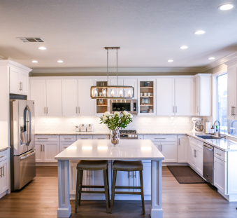
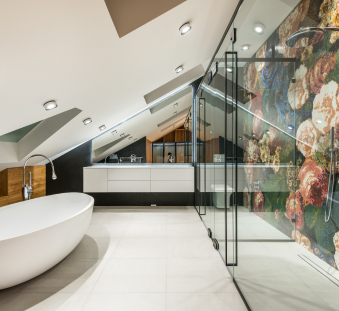

Gallery
Interior design is the art and science of enhancing the interior of a building to achieve a healthier and more aesthetically pleasing environment for the people using the space.

State of art kitchen spaces.

Custom-made modern bathrooms.